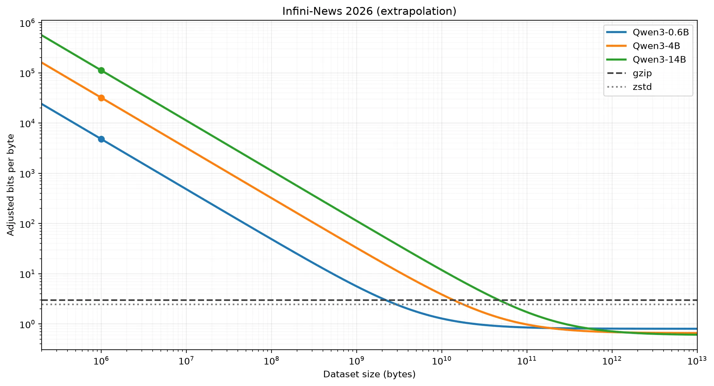
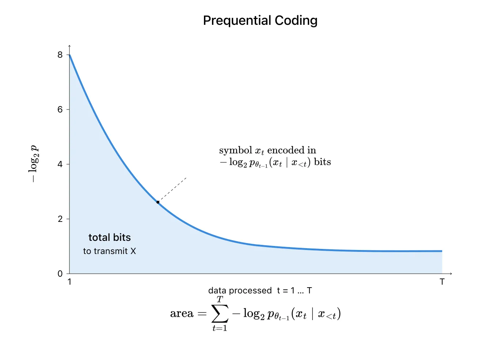
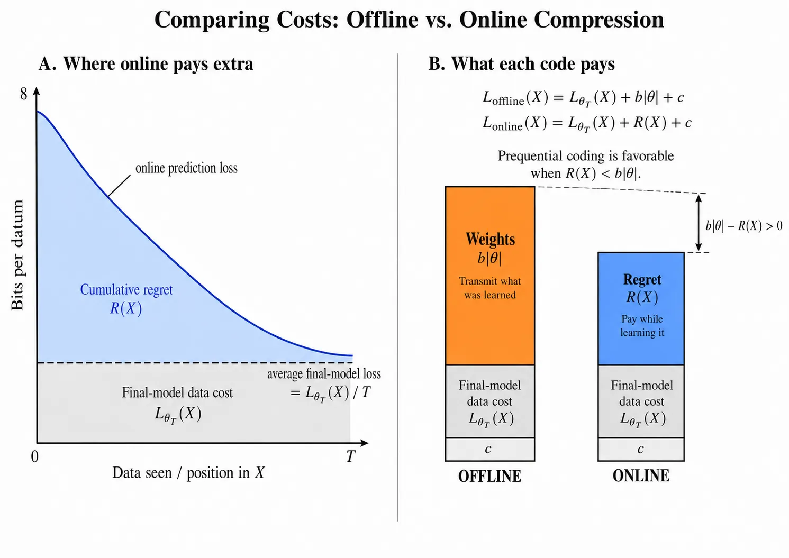
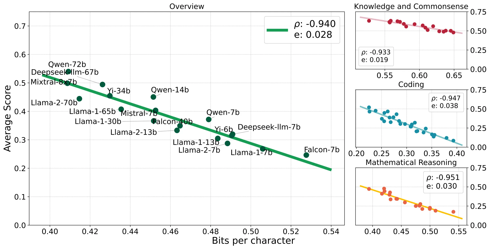
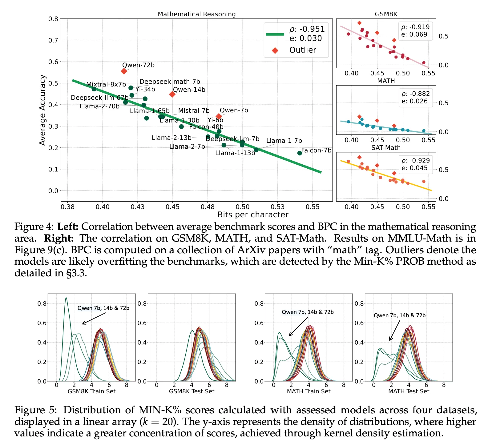
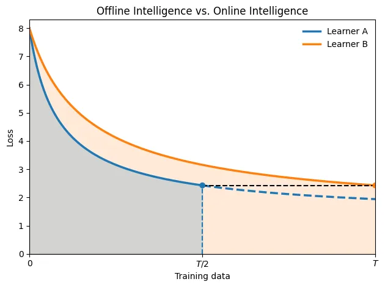
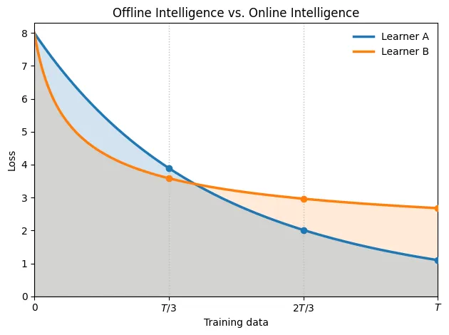

压缩与智能
论压缩、智能与大语言模型之间的关系。
在那深处，我看见宇宙间散落如叶的万物，
被爱装订成唯一的一卷：
实体、偶性与它们之间的关系，
仿佛熔铸为一，
以至于我所言说的不过是一缕微光。
我相信自己看见了这绳结的普遍形式，
因为在诉说它时，
我感到喜悦在心中延展。
离线范式 (Offline)复用既有结构 Reuse
- 压缩编码两段式编码 (Two-part code)
- 额外比特代价存储模型权重 b|θ|
- 智能评测切面冻结权重静态表现（基准/留出损失）
- 核心盲区无法核算训练分布距离与刷榜污染
- 理论下界极限柯尔莫哥洛夫复杂度 K(X)
在线范式 (Online)实时提炼结构 Extract
- 压缩编码序贯预测编码 (Prequential code)
- 额外比特代价学习过程累积遗憾 R(X)
- 智能评测切面学习器的数据效率 (Data efficiency)
- 规模化分解HT + B/(1−β)·T^(1−β) + c
- 理论最优极限所罗门诺夫归纳 M(x)
摘要Abstract
“智能即压缩”这句话已被重复过上千次，但往往只停留在格言式的妙语。本文力求对这一关系给出迄今最系统、最透彻的阐释。全文以大语言模型（large language models, LLMs）为透镜展开论述——这一视角恰如其分，因为大语言模型既代表了当前人工智能的最高水平，也将如后文所示，成为人类迄今创造出的最强大的数据压缩程序。
第一部分首先证明，大语言模型预训练所使用的目标函数——交叉熵（cross-entropy）——本质上就是压缩目标：预训练显式优化模型用尽可能少的比特编码数据的能力。随后，本文展示如何在实践中将大语言模型用作无损压缩器，并击败 gzip 与 zstd 等传统算法。这里考察两种范式：离线（offline）范式，即用预训练模型的权重编码数据，并在最终编码长度中计入权重的体积代价；以及在线（online）范式，即让模型在目标数据上从零开始（tabula rasa，白板状态）训练，此时压缩比特流的大小直接等同于训练损失曲线本身围成的面积。
第二部分探讨压缩能力与智能各个侧面之间的关系。本文采用的智能定义是泛化能力（capacity to generalize）：复用并从既有经验中学习结构，以预测未知的新数据。“复用（reuse）”与“提炼（extract）”这一二分法，恰好对应第一部分中的离线压缩与在线压缩。在离线设定下，大语言模型的压缩能力与其在真实世界智能行为评测基准上的表现呈近乎线性的关系（Huang et al., 2024）。在在线设定下，模型的压缩能力则进一步等价于公认的另一项智能核心维度：学习者的数据效率（data efficiency）。
本文首次发表于 2026 年 7 月 25 日，以纪念雷·所罗门诺夫（Ray Solomonoff）诞辰一百周年。所罗门诺夫在其最优归纳（optimal induction）研究中首次形式化了压缩与智能的关系，而当今大语言模型的预训练可以视为他这一理论理想的可计算近似。
第一部分：压缩Part One: Compression
1.1 预训练Pretraining
众所周知，预训练大语言模型是下一词元预测器（next-token predictors）。预训练流程包括：随机初始化一个模型 （通常为 Transformer 架构），输入一段数据序列 ，自回归地预测每个符号出现的条件概率 ，计算衡量模型对真实序列 预测准确度的损失 ，再将 反向传播以调整模型权重，使 出现的概率更高，期望从中吸收到的规律有助于预测未来的序列。
这与压缩有什么关系？我们可以将预测概率转化为惊奇度（surprisal）：。惊奇度的单位是比特（bit）：它量化了在任何拥有分布 的解码者都可精确还原的前提下，无损编码符号 所需的最小比特数。因此，编码整个序列 所需的总比特数 为：
模型 对 的预测越准确， 就越小，编码它所需的比特数也就越少。 是在给定 条件下编码该数据的理论比特下界；而在实际工程中，诸如算术编码（arithmetic coding）之类的熵编码（entropy coding）算法能极其逼近这一理论极限（对于长数据序列，额外开销仅在寥寥几个比特之内）。
一切预测模型（包括预训练语言模型）都可以借助这种方式无损压缩数据序列，而预训练与压缩之间的联系还要更加直接。语言模型预训练所使用的损失函数 是交叉熵，即平均惊奇度：
大语言模型的预训练，正在显式优化其用尽可能少的比特编码数据序列的能力。
1.2 离线压缩Offline Compression
为了展示预训练语言模型能多么高效地用于数据压缩，我们沿用 Delétang et al. (2023) 的总体方案，使用 Qwen3 系列预训练模型（Yang et al., 2025）输出的预测分布，配合 constriction 库中的算术编码实现来编码多组数据集，并将压缩效率与传统压缩算法 gzip 和 zstd 对比。
实验考察以下三个数据集。前两个数据集均发布于 Qwen3 模型权重公开一年之后，有助于确保它们不可能预先存在于模型权重中；最后一个数据集则因其独特的语义密度而入选：
- Infini-News 2026：取自 Infini-News 数据集（Lazzaroni et al., 2026）的 2026 年英文新闻文章 1 MB 文本子集。
- Magnifica humanitas：教皇良十四世（Pope Leo XIV）于 2026 年 5 月发表的首部通谕（探讨人工智能问题）全文，大小 239 KB。
- Finnegans Wake（《芬尼根的守灵夜》）：詹姆斯·乔伊斯（James Joyce）最后一部小说全文，大小 1.4 MB。该书以高度特异的语言写成，用香农的话说，“据称实现了语义内容的压缩”（Shannon, 1948）。
为了跨模型与传统算法公平比较压缩后体积，我们以每字节比特数（bits-per-byte, bpb）表示压缩效率，即将编码后比特流长度 除以原始 UTF-8 文本的总字节数（因此未压缩文本恒为 8.0 bpb）。这一指标既不依赖压缩器的内部输入编码粒度（词元 vs 字节），也在不同规模的数据集之间做了归一化。
| 数据集 (Dataset) | gzip | zstd | Qwen3-0.6B | Qwen3-4B | Qwen3-14B |
|---|---|---|---|---|---|
| Infini-News 2026 (1 MB) | 3.0250 | 2.4707 | 0.8024 | 0.6557 | 0.5994 |
| Magnifica humanitas (239 KB) | 2.7436 | 2.3806 | 0.7127 | 0.6066 | 0.5599 |
| Finnegans Wake (1.4 MB) | 3.6821 | 3.2505 | 2.1109 | 1.9629 | 1.8738 |
哪怕是最小的 0.6B 模型，在每个数据集上的单段压缩体积都显著小于 gzip 和 zstd；随着模型规模增大——成为更强的预测器——它们能把内容压缩进越来越少的比特中。
然而，要想解码还原原始序列，接收端必须同时拥有压缩比特流以及用于解码它的程序。评估真实压缩效率时必须把两者的体积都核算在内；否则，我们完全可以构造一个把整个数据集硬编码在程序内部、运行时原样吐出的“压缩器”。同时对数据比特流与解码程序体积计费的编码称为两段式编码（two-part code）。
gzip、zstd 以及大语言模型的采样逻辑都可以用几百行代码实现。但当使用预训练大语言模型时，“解码程序”是这段采样代码加上模型的全部权重的总和。Qwen3 系列中最小的模型也有 6 亿参数；以 FP8 表示时每个参数占 1 字节，仅权重本身就重达 600 MB。
设权重精度为每参数 比特，采样与编码程序代码长度为 比特，则用预训练模型编码数据集的两段式编码长度为：
重新生成上表，将 Qwen3 各列改为完整的两段式编码长度（bpb），我们得到：
| 数据集 (Dataset) | gzip | zstd | Qwen3-0.6B | Qwen3-4B | Qwen3-14B |
|---|---|---|---|---|---|
| Infini-News 2026 (1 MB) | 3.0250 | 2.4707 | 4,801 | 32,001 | 112,001 |
| Magnifica humanitas (239 KB) | 2.7436 | 2.3806 | 20,080 | 133,864 | 468,522 |
| Finnegans Wake (1.4 MB) | 3.6821 | 3.2505 | 3,453 | 23,007 | 80,521 |
惨不忍睹。哪怕最小模型的权重体积也令评测中最大的数据集相形见绌；编码所需的绝大部分比特都花在了编码模型权重本身上。
不过，两段式编码中的程序成本是一个独立于数据集大小的固定开销；随着待编码数据集增大，权重成本会被逐步摊薄（amortized）。若朴素地将 Infini-News 2026 视为更大规模同分布语料的独立同分布（i.i.d.）样本，我们可以将编码长度外推至任意规模的数据集，估算 bpb 如何随数据量增加而下降。

zstd。
当数据集足够大时——对于 Qwen3-0.6B 而言约为 2.88 GB——权重被充分摊薄，总 bpb 开始击败 zstd。但有没有办法彻底免除权重的传输成本，让我们在这些兆字节级别的小数据集上也能把语言模型当作强力无损压缩器来用？
1.3 在线压缩Online Compression
不妨审视预训练损失曲线的几何形态。横轴代表模型当前所处的训练步数，纵轴代表该步数据的交叉熵——即编码当前批次数据所需的平均比特数。于是，一个学习器编码其整个训练数据集所需的总成本，正比于曲线下的面积——即所有训练步损失的累加和（外加学习器程序代码本身极小的固定开销），而与模型权重的体积完全无关。

为了让解码端在每一步都能还原数据，编码端与解码端必须从完全相同的初始权重出发。但既然我们是从零开始学习，实际上根本不需要传输任何参数信息——只需在两端使用相同的随机种子实例化参数即可。只要这样做，并用同一套确定性程序（例如使用确定性 CUDA 算子）训练编码端和解码端，我们就能在每一步用当前权重顺序传输数据批次，再让两端步调一致地（in lockstep）执行同步训练更新，全程始终保持两端权重完全一致。
这一过程称为序贯预测编码（prequential coding）（Dawid, 1984; Rissanen, 1984; Blier & Ollivier, 2018）。序贯预测编码的总长度等于每一步损失的累加和，加上恒定的程序代码开销 ：
重申一遍，序贯预测编码的完整算法步骤如下：
- 在编码端与解码端使用相同的固定随机种子初始化 ；
- 编码端利用当前模型以 比特将 编码发送给解码端；
- 解码端利用这 比特无损解码还原出原始 ；
- 编码端与解码端各自在 上执行一步训练更新，同步产生 ；
- 对全部 个时间步重复步骤 2 至步骤 4。
通过用同一随机种子白板初始化权重，并在每一步对相同数据执行确定性训练，编码端和解码端在整个运行期间共享分毫不差的权重，却从未传输过权重本身：实际传输的只有随机初始化与训练程序代码，以及由训练损失曲线决定的数据比特流。
编码端 (Encoder)
seed = 42解码端 (Decoder)
seed = 42""为了在真实数据上验证这一方案，作者借用 qlabs-eng/slowrun 的高效 Transformer 预训练代码库搭建实验：模型含 2.2 亿（220M）参数，配备简单的字节级分词器，全程开启确定性训练，并同样调用 constriction 算术编码逐符号（每次一个 ）将数据集编码为比特流。三个数据集使用完全相同的超参数，结果如下：
| 数据集 (Dataset) | gzip | zstd | preq（220M 在线序贯编码） |
|---|---|---|---|
| Infini-News 2026 (1 MB) | 3.0250 | 2.4707 | 2.4221 |
| Magnifica humanitas (239 KB) | 2.7436 | 2.3806 | 2.2811 |
| Finnegans Wake (1.4 MB) | 3.6821 | 3.2505 | 2.6726 |
尽管相对于常规预训练而言这些数据集小得惊人，模型依然学得足够快，在全部三个数据集上都击败了 gzip 和 zstd；其中优势最悬殊的是《芬尼根的守灵夜》——其丰富多变且语义密集的词汇对传统算法而言要难压缩得多。
若要在更大规模上作对比，我们可以参考大型文本压缩基准（Large Text Compression Benchmark）（Mahoney, 2006）：这是一项压缩英文维基百科 字节（100 MB）与 字节（1 GB）子集的竞赛，相当于不限算力版的 Hutter 奖（Hutter, 2006）。当前该基准的榜首是 nncp（Bellard, 2024），它利用专门定制的 Transformer 模型以在线序贯预测编码压缩数据集。凭借更精良的模型调优与充足得多的训练数据，nncp 将 enwik9 压缩到了 zstd 一半以下的每字节比特数：
| 维基百科基准集 | gzip | zstd | nncp（Transformer 序贯编码） |
|---|---|---|---|
| enwik8 (100 MB) | 2.9156 | 2.0324 | 1.1932 |
| enwik9 (1 GB) | 2.5807 | 1.7254 | 0.8531 |
nncp 与传统算法压缩率对比（单位：bpb）。在序贯预测编码中，取代庞大固定权重成本的主要开销，是模型尚未学会准确预测之前，在训练早期传输数据所付出的高昂比特代价。学习程序（如模型架构与优化器）从每条样本中学习的效率越高，其压缩能力就越强。上述实验中的模型凭借足够高的学习效率，在对数据比特流和程序代码做完整诚实记账的前提下，全面超越了传统无损压缩算法。
1.4 成本对比Comparing Costs
为了更细致地审视离线与在线两种方案在压缩计费项上的差异，考虑在 上完成预训练后的模型最终权重 。用最终权重 编码 的单段比特流成本为：
这与离线压缩小节第一张表中的单段编码形式相同，但现在使用的是在 自身上预训练得到的最终权重（而非 Qwen3 等外部预训练模型），以便让离线与在线两种设定指向同一个参照对象。将学习器相对于其自身最终权重的累积遗憾（cumulative regret）定义为在线编码比该最终权重比特流多支付的超额比特数：
从几何上看， 就是学习器的训练损失曲线与其最终损失水平线之间夹成的面积——即模型最终收敛到底部之前，早期预测误差向上隆起的那块区域。由此，两种完整编码长度可对称地分解为：
消去共同项后，两者的较量归结为单一的不对称性：离线方案支付 （存储权重的成本），在线方案支付 （学习权重的成本）。每当 时——即通过经验习得 的结构比直接传输模型本身更便宜时——序贯预测编码就比离线编码更占优。

第二部分：智能Part Two: Intelligence
我们已经看到：一切预测都隐含着压缩；预训练目标显式最小化 的描述长度；在离线设定下，更强大的预训练模型能将数据集压缩进更少的比特（无论是忽略权重成本，还是用足够大的数据集将其摊薄）；而在在线设定下，更高效率的学习器能将其训练数据集压缩进更少的比特。
但究竟是什么性质使数据得以被压缩？它与智能又有什么关系？
2.1 泛化Generalization
只看数据比特流项时， 的描述长度与模型 预测它的好坏成反比： 赋予真实符号 的概率越高，编码它所需的比特就越少。
考虑最朴素的模型 ：它无视一切上下文，对构建 所用的词表 中的每个可能符号赋予均匀概率 。对于任意序列 ，其编码长度恒定为 。对于字节级数据（如纯文本 UTF-8 数据集）， 就是未压缩原始数据集的大小。只要 平均而言小于 ，模型 就能用比原始数据本身更少的比特编码数据流，从而实现压缩：。
若要让 的完整描述长度——即数据比特流成本加上生成它的程序成本，如 与 ——小于 ，数据比特流相对于均匀编码所节省下来的比特数就必须超过程序本身的成本。
一个把 逐字硬编码在代码里的程序固然可以完美预测它，令 。但硬编码一个符号至少要耗费与它所省下的数据比特同样多的程序比特，因此永远无法缩短完整描述长度；唯一能带来净收益的比特，是在多次预测中被反复复用的比特——在那里，1 比特的程序代码通过多次减少预测误差而赚回好几倍的数据比特节省。因此，完整描述长度比 短多少，直接证明了该程序在多大程度上捕捉到了 内部的可复用预测结构（reusable predictive structure）。
在离线压缩中，预训练模型从训练数据集 中习得预测结构，并将其复用于预测测试数据 ；在在线压缩中， 同时充当训练数据与测试数据，从前缀 中习得的结构被复用于预测 。在这两种情形中，每一个产生净收益的比特都具有相同的形态：从既有经验中提炼，在未知新数据上兑现。
这就是我们对泛化（generalization）的操作性定义：复用从既有经验中学到的规律以准确建模未知新数据的能力。
“复用”意味着程序成本在多次预测间被摊薄；“准确建模”意味着数据残差成本相对较小；而从“既有经验”到“未知新数据”的跨越则意味着记账发生在未参与构建该模型的新数据上。模型向 的泛化体现在两个维度上：其完整描述长度比 低多少，以及 距离其既有经验有多远。
2.2 理论极限The Ideal Limits
前文看到，不捕捉任何规律时描述 的成本为 。而描述长度的理论底线是柯尔莫哥洛夫复杂度（Kolmogorov complexity） ，即能够输出 的最短程序的长度。 利用了 内部一切可能的可复用结构，其下界仅受限于数据中不可约简的随机噪声。它是离线设定下（当全部 事先可见时）的理想极限，但遗憾的是它不可计算——求解它需要穷举运行所有可能的程序，而其中一部分程序永远不会停机。
在在线设定下，当 以数据流形式逐步到达时，理论理想则是所罗门诺夫归纳（Solomonoff induction）。其通用混合分布（universal mixture）考察固定通用单调图灵机 上所有输出以 开头的可能程序，并按程序长度施加指数级惩罚权重——每增加 1 比特描述长度，程序的先验权重便减半：
对前缀取条件即可得到预测器 ，进而自然构成一套序贯预测编码：
值得再次强调的是，每个程序的权重完全由其长度决定：混合分布的预测呈指数级集中在最短程序所青睐的后续延展上。所罗门诺夫定理证明了该混合分布具有通用性（universality）：对于任意可计算预测器 与任意序列 ，恒有 ，其中不等式右侧正是预测器 的两段式编码成本，外加仅取决于通用图灵机选择的常数项开销。
最善于压缩过去的程序，主导了最优归纳对未来的预测——这从理论上证实了压缩与泛化之间的深刻联系。所罗门诺夫定理为奥卡姆剃刀的信息论表述——最小描述长度（Minimum Description Length, MDL）原则——提供了强有力的支撑：对数据给出最短完整描述的模型就是最佳模型。这是一把由理论理想背书的实用剃刀。
2.3 智能Intelligence
本文考察的智能操作性定义即泛化能力。我们将从模型压缩未知新数据的两个视角来审视大语言模型的这一能力，与第一部分的两种压缩方法一一对应。
离线智能（offline intelligence）视角评估训练完成后模型的最终权重对留出数据（held-out data）的预测表现。前沿模型的智能通常在 SWE-bench、FrontierMath、GDPval 等多样化的真实世界基准上评测对比；而 modded-nanogpt、slowrun 等社区训练竞赛则直接以留出预训练数据上的最终损失为目标——正是第一部分测量的同一个量。支撑人们信任这些评测的隐含假设是：优异成绩源于泛化，而非狭隘的刷榜投机（benchmark-maxing），因而真实反映了模型广泛泛化至未知数据的能力。
在线智能（online intelligence）视角评估模型从经验中学习的速率，即通常所说的数据效率或样本效率。在学习过程内部，数据效率正是泛化的直接显现：模型之所以能更准确地预测 ，是因为它从前缀 的数据中学到了更多可复用的结构——其能力上限直指所罗门诺夫归纳。
| 评估范式 | 压缩方案 (Compression) | 智能体现 (Intelligence) | 理论理想 (Ideal) |
|---|---|---|---|
| 离线 (Offline) | 两段式编码 (two-part code) | 最终权重评测 (final weight evaluation) | 柯尔莫哥洛夫复杂度 (Kolmogorov complexity) |
| 在线 (Online) | 序贯预测编码 (prequential code) | 学习数据效率 (learning data efficiency) | 所罗门诺夫归纳 (Solomonoff induction) |
接下来，我们分别深入考察离线智能与在线智能，以及它们与压缩的具体联系。
2.4 离线智能Offline Intelligence
离线智能视角审视模型冻结的最终权重预测留出数据的表现。评测数据越宽广、越多样，模型做出准确预测所需的泛化能力就越强。这使得在类预训练留出数据集上评测交叉熵损失（如第一部分所做）成为最稳健的离线智能度量之一，因为这类语料横跨极其广阔的领域与多样性。
事实上，GPT 预训练范式的成功体现在两方面：它既展示了扩展定律——仅靠更大的模型与更多的数据就能预训练出越来越强的压缩器；同时证明了这些压缩能力高度预测了模型在人类视为“智能行为”的留出基准测试上的表现。
Huang et al. (2024) 在《Compression Represents Intelligence Linearly》（压缩线性表征智能）一文中优雅地展示了这一点。他们选取了来自不同机构的 31 个开源权重预训练模型，在各模型知识截止日期之后采集的类预训练数据集上评测每字符比特数（BPC）压缩率，同时测量它们在知识、代码与推理基准上的得分。将两者绘制成图后，呈现出近乎线性的强相关性：

然而，仅凭冻结的最终权重评估模型——无论是看留出集损失还是基准分数——都使我们无法核算产生这组权重的训练过程。模型表现究竟在多大程度上体现了泛化，取决于被评测数据距离模型训练分布有多远；而在仅拿到黑盒预训练模型权重时，我们无从知晓这一距离。
即便是出于最善意动机的实验室，也面临强烈的激励去纳入与目标测试尽可能接近（哪怕不是测试集本身）的训练数据。数据筛选过程越向特定测试倾斜，最终模型在该测试上的得分就越不代表真正的泛化。
一个极具说明性的例子是：在该论文中，作者发现 Qwen 系列模型在数学推理基准上的得分显著高出其通用压缩率所对应的水平，“这意味着 Qwen 模型系列在预训练阶段可能接触过 GSM8K 训练集、MATH 训练集，甚至 MATH 测试集”。

因此，Huang et al. 的结果起到了双重作用：主体的线性拟合支持将压缩率作为这类基准所瞄准的智能度量；而偏离主线的异常点则告诫我们切勿过度解读基准分数本身——基准高分很容易用邻近的训练数据“买”到。在他们的实验中，广泛预训练语料上的损失更难投机作弊；但在离线智能测量中，我们原则上同样永远无法确知训练语料向评测语料倾斜了多少。
离线智能度量的最深层症结在于：对训练最终产物的评估无法交代产生它的过程，因而无法核算其表现究竟有多少真正源于泛化。为了评估学习过程本身，我们现在转向在线智能。
2.5 在线智能Online Intelligence
在线智能视角追问的是：学习器将经验转化为泛化的效率有多高？在这一视角下，任何仅针对训练最终产物的测量都无法成为智能的度量，因为智能从根本上是学习器（learner）的属性。
这正是 Chollet (2019) 在“技能（skill）”与“技能习得能力（skill-acquisition）”之间所做的区分：其中“技能”指系统在特定任务测试上的表现（如真实世界基准或预训练语料损失），而“技能习得能力”指系统学习新任务的能力。Chollet 论证道：
单纯测量系统在任何给定任务上的技能都不足以衡量智能，因为技能受到先验知识与既有经验的强烈调节：无限的先验或无限的训练数据允许实验者为系统“购买”任意水平的技能，从而掩盖系统自身的泛化能力。
将其与压缩重新联系起来：离线智能度量虽然可以计入程序成本 （尽管实践中极少计入，正如 Huang et al. 排除了权重成本），但静态程序成本使先验知识与训练经验的贡献完全隐形。在对相同架构的模型做离线比较时，一个从先前运行热启动的模型、一个训练了十亿词元的模型、与一个训练了一万亿词元的模型具有完全相同的静态程序成本，尽管它们蕴含的先验知识与经验量天差地别。
回顾第一部分，序贯预测编码免除了权重的存储成本，转而直接对模型从零开始（tabula rasa）训练所消耗的经验成本计费：
序贯预测编码的形式使我们能够在一个统一的度量——序贯编码长度——中同时对学习器的先验与经验明码标价。第一部分纯粹从数据压缩角度审视 ，现在我们将其视为数据效率的度量——即在线智能的度量。
将学习器在 上的数据效率定义为它从每单位经验数据中平均提炼出的预测价值比特数。由于序贯编码长度是学习器在整个 上的总预测成本，在同一 上取得更短的序贯编码长度就意味着更高的数据效率：学习器为同样的经验支付了更少的比特。而对 支付更少的比特，就是从 中实现了更好的泛化——将既有经验转化为了更多可用于预测未知数据的结构。序贯编码长度由此将泛化、数据效率以及学习器对 的完整描述长度统一为单一物理量。
用 比较不同学习器时，仍有一个混淆因素无法在公式里直接计费：从 泛化至 的数据内生难度。不同的经验序列 具有不同数量的内在可复用结构与不同的学习难度。由于尚无量化这种数据集相关难度的实用方法，我们无法对其收费，而必须通过实验设计来控制它——让待比较的学习器在相同分布的数据上、按完全相同的样本顺序训练。
设想在同一个 上训练两个学习器，其中学习器 A 全程更高效，在损失曲线的每一点上都全面占优（dominate）学习器 B。如果我们把训练到一半的学习器 A 与训练完全部数据集的学习器 B 作比较，按最终预训练损失衡量的离线智能将完全无法区分两者。

相比之下，若按在线智能——即曲线下阴影面积所表示的序贯编码长度——来评估，学习器 A 则显著比学习器 B 更智能：B 在曲线每一点上的单样本比特代价都更高，因此也需要消耗更多数据才能达到相同的损失水平。
然而，这两个标量——无论是最终离线损失还是序贯编码长度——都不是标度不变的（not scale-invariant）。两种评估都发生在某个特定经验量 处，随着 增长，胜负结论可能发生翻转。

在 处，学习器 B 同时拥有比学习器 A 更低的损失和更短的序贯编码；在 处，学习器 B 的瞬时损失已高于 A，但总编码长度仍然更短；而到 处，学习器 A 在两项指标上均反超了学习器 B。
要想获得对学习器的标度不变比较，我们必须从某条特定的训练损失曲线转向其底层的几何结构：即支配任意经验水平下损失演化的数学法则。
2.6 规模化视角下的智能Intelligence at Scale
经验表明，预训练的训练损失曲线可以用幂律（power laws）紧密拟合。只需拟合几个捕捉学习器不同特性的系数，我们就能预测任意步数 处的损失：
这几个系数共同构成了损失曲线的几何形态： 是学习器收敛趋向的底部下限（floor）——下界受限于数据的内禀熵，上界受限于模型的表征容量。高出底部的超额损失 服从幂律——在对数-对数坐标下是一条斜率为 、高度水平由 决定的直线。 改变曲线的倾斜度； 在每一个 处施加恒定的乘法因子，整体平移曲线；三者共同决定了学习器的数据效率。
序贯编码长度在解析上继承了这一几何结构。将损失在整个 上求和并加上程序成本 ，在实际经验指数所处的 区间内求值，编码长度分裂为增长阶严格递减的三项：
在瞬时损失曲线上， 衰减至零：每个学习器终将收敛至其底部 。因此，每个系数在序贯编码长度中分别支配一个不同增长阶的项： 支配底部的线性项， 决定亚线性项的幂指数（即学习器相对于 的累积遗憾）， 为其前置系数， 则是程序的常数成本。系数的主次顺序直接由各项的渐近阶决定：随着 增长，高阶项上的任何微小差异最终都会淹没低阶项上的任何差异。
因此，在极限情形 下，唯一重要的参数是 。但在现实中， 是有界的：前沿实验室使用的预训练数据集正在逼近互联网上全部高质量人类数据的总和（Villalobos et al., 2024）。
Patel (2026) 估算，人类习得语言与学会驾驶所需的经验量比当前模型少三到六个数量级：这一存在性证明揭示了数据效率仍有何等巨大的提升空间。过去，我们可以通过训练多得多的词元来弥补从每个词元中学得太少的短板；而在今天，智能的上限正由学习器的数据效率所决定。
相关工作Related Works
预测与压缩之间的恒等性始于香农（Shannon, 1948）。算术编码（Pasco, 1976; Rissanen, 1976; Witten, Neal & Cleary, 1987）以近乎可忽略的额外开销将任意预测器的概率分布转化为二进制比特流。
理论极限属于算法信息论范畴。所罗门诺夫（Solomonoff, 1964）定义了通用混合分布并随后证明了其收敛性（Solomonoff, 1978）；柯尔莫哥洛夫（Kolmogorov, 1965）与蔡廷（Chaitin, 1966）各自独立形式化了描述复杂度。
“完整描述必须计入程序成本”这一准则早于其现代名称：Wallace & Boulton (1968) 以最小消息长度（Minimum Message Length）之名提出两段式编码，比 Rissanen (1978) 创立最小描述长度（MDL）早了整整十年。Hinton & van Camp (1993) 将权重计费引入神经网络。在线替代方案——序贯预测编码——由 Dawid (1984) 与 Rissanen (1984) 发展建立；Blier & Ollivier (2018) 证明深度网络的序贯预测编码远短于其两段式编码，Jiang & Zhou (2025) 则给出了将其应用于数据课程学习的精彩直观阐释。Qiu et al. (2026) 的同期工作提出了重序编码（requential coding），以更高昂的计算代价换取比序贯预测编码更短的描述长度。
在实践层面，Delétang et al. (2023) 展示了将预训练大语言模型用作离线压缩器，而 Mahoney 的大型文本压缩基准（2006）及其当前榜首 nncp（Bellard, 2024）则代表了 enwik8 与 enwik9 数据集上序贯预测编码的最高水平。
蔡廷长期主张“理解即压缩”（Chaitin, 2002）。Hutter (2005) 将所罗门诺夫归纳推广至最优智能体 AIXI，Legg & Hutter (2007) 在此基础上构建了通用智能的形式化定义。Mahoney (1999) 提议将文本压缩作为人工智能测试，并由 Hutter 奖（Hutter, 2006）正式化。这一论点在前沿实验室的部分研究团队中根基深厚：公开场合下，Rae (2023) 论证压缩是通往 AGI 之路，Sutskever (2023) 将 SGD 阐释为压缩器以解释无监督学习，Selsam (2025) 将预训练描述为近似的所罗门诺夫归纳。Huang et al. (2024) 测量了压缩与基准表现的关系并发现其呈线性。Chollet (2019) 将智能解耦为独立的“技能”与“技能习得”阵营，直接启发了本文离线智能与在线智能的映射框架。
用于建模训练损失曲线的幂律源自扩展定律文献（Hestness et al., 2017; Kaplan et al., 2020; Hoffmann et al., 2022），Villalobos et al. (2024) 记录了日益迫近的数据墙，而 slowrun（qlabs et al., 2025）则是高数据效率训练算法公开竞赛的典范。
施密德胡伯（Jürgen Schmidhuber）长期论证压缩是智能不可分割的核心组成部分，其中 Schmidhuber (2009) 更是作者最喜爱的论文之一。
结论Conclusion
每一个预测器都是压缩器，而诚实的压缩核算必须把程序本身的成本包含在内。要让数据的完整描述长度短于原始数据本身，唯一的途径是捕捉可复用的结构——使编码该结构所花费的程序比特少于它在准确建模数据时节省下来的比特；而在从未见过的数据上做到这一点，就是泛化。
智能即泛化的能力。我们从两个视角审视了它：离线视角评估预训练模型在留出数据集上的压缩能力，它与智能行为基准呈近乎线性的关系；在线视角评估学习器本身，此时泛化等价于数据效率。无论在哪种视角下，智能的度量单位都是比特。
随着前沿预训练运行逼近互联网全部高质量数据的围墙，智能的进一步增长必须来自弥合模型与人类之间的数据效率鸿沟。学习器越高效，它给出的完整描述长度就越短，也就越逼近所罗门诺夫归纳的理论理想。
致谢Acknowledgements
感谢 Niloofar Mireshghallah、Samip Dahal、Liam Corrigan 与 Fable 5 对初稿提出的早期宝贵建议，并感谢 Lambda 赞助第一部分实验所使用的计算资源。
引用与参考文献Citation & References
@article{greene2026intelligence,
title = {Compression and Intelligence},
author = {Greene, Ryan},
journal = {greene.sh},
year = {2026},
month = {July},
url = "https://www.greene.sh/compression-and-intelligence/"
}
参考文献References
- Fabrice Bellard. “NNCP: Lossless Data Compression with Neural Networks.” Technical report, bellard.org (2024).
- Léonard Blier and Yann Ollivier. “The Description Length of Deep Learning Models.” Advances in Neural Information Processing Systems 31 (2018).
- Gregory J. Chaitin. “On the Length of Programs for Computing Finite Binary Sequences.” Journal of the ACM 13 (4): 547–569 (1966).
- Gregory J. Chaitin. “On the Intelligibility of the Universe and the Notions of Simplicity, Complexity and Irreducibility.” Lecture, German Philosophy Congress, Bonn (2002).
- François Chollet. “On the Measure of Intelligence.” arXiv preprint arXiv:1911.01547 (2019).
- A. Philip Dawid. “Present Position and Potential Developments: Some Personal Views: Statistical Theory: The Prequential Approach.” Journal of the Royal Statistical Society, Series A 147 (2): 278–292 (1984).
- Grégoire Delétang, Anian Ruoss, Paul-Ambroise Duquenne, Elliot Catt, Tim Genewein, et al. “Language Modeling Is Compression.” International Conference on Learning Representations (2023).
- Joel Hestness, Sharan Narang, Newsha Ardalani, Gregory Diamos, Heewoo Jun, et al. “Deep Learning Scaling Is Predictable, Empirically.” arXiv preprint arXiv:1712.00409 (2017).
- Geoffrey E. Hinton and Drew van Camp. “Keeping the Neural Networks Simple by Minimizing the Description Length of the Weights.” Proceedings of the Sixth Annual Conference on Computational Learning Theory: 5–13 (1993).
- Jordan Hoffmann, Sebastian Borgeaud, Arthur Mensch, Elena Buchatskaya, Trevor Cai, et al. “Training Compute-Optimal Large Language Models.” Advances in Neural Information Processing Systems 35 (2022).
- Yuzhen Huang, Jinghan Zhang, Zifei Shan, and Junxian He. “Compression Represents Intelligence Linearly.” Conference on Language Modeling (2024).
- Marcus Hutter. Universal Artificial Intelligence: Sequential Decisions Based on Algorithmic Probability. Springer (2005).
- Marcus Hutter. “The Hutter Prize for Lossless Compression of Human Knowledge.” prize.hutter1.net (2006).
- Yiding Jiang and Allan Zhou. “A Compression Perspective on Curriculum Learning.” Blog post, yidingjiang.github.io (2025).
- Jared Kaplan, Sam McCandlish, Tom Henighan, Tom B. Brown, Benjamin Chess, et al. “Scaling Laws for Neural Language Models.” arXiv preprint arXiv:2001.08361 (2020).
- Andrey N. Kolmogorov. “Three Approaches to the Quantitative Definition of Information.” Problems of Information Transmission 1 (1): 1–7 (1965).
- Ruggero Marino Lazzaroni, Jana Lasser, and Kirill Solovev. “Infini-News: Efficiently Queryable Access to 1.3 Billion Processed Common Crawl News Articles.” arXiv preprint arXiv:2605.18337 (2026).
- Shane Legg and Marcus Hutter. “Universal Intelligence: A Definition of Machine Intelligence.” Minds and Machines 17 (4): 391–444 (2007).
- Matthew V. Mahoney. “Text Compression as a Test for Artificial Intelligence.” Proceedings of AAAI-99 (1999).
- Matthew V. Mahoney. “Large Text Compression Benchmark.” mattmahoney.net (2006).
- Richard C. Pasco. “Source Coding Algorithms for Fast Data Compression.” Ph.D. thesis, Stanford University (1976).
- Dwarkesh Patel. “The data black hole at the center of AI.” Dwarkesh Podcast, June 19, 2026.
- Shikai Qiu, Marc Finzi, Yujia Zheng, Kun Zhang, and Andrew Gordon Wilson. “Requential Coding: Pushing the Limits of Model Compression with Self-Generated Training Data.” arXiv preprint arXiv:2607.11883 (2026).
- qlabs. “slowrun.” GitHub repository (2025).
- Jack Rae. “Compression for AGI.” Stanford MLSys Seminar #76 (2023).
- Jorma Rissanen. “Generalized Kraft Inequality and Arithmetic Coding.” IBM Journal of Research and Development 20 (3): 198–203 (1976).
- Jorma Rissanen. “Modeling by Shortest Data Description.” Automatica 14 (5): 465–471 (1978).
- Jorma Rissanen. “Universal Coding, Information, Prediction, and Estimation.” IEEE Transactions on Information Theory 30 (4): 629–636 (1984).
- Jürgen Schmidhuber. “Driven by Compression Progress: A Simple Principle Explains Essential Aspects of Subjective Beauty, Novelty, Surprise, Interestingness, Attention, Curiosity, Creativity, Art, Science, Music, Jokes.” arXiv preprint arXiv:0812.4360 (2009).
- Daniel Selsam. “Pre-Training GPT-4.5.” OpenAI podcast with Sam Altman, Alex Paino, and Amin Tootoonchian (2025).
- Claude E. Shannon. “A Mathematical Theory of Communication.” Bell System Technical Journal 27 (3): 379–423 and 27 (4): 623–656 (1948).
- Ray J. Solomonoff. “A Formal Theory of Inductive Inference. Parts I and II.” Information and Control 7 (1): 1–22 and 7 (2): 224–254 (1964).
- Ray J. Solomonoff. “Complexity-Based Induction Systems: Comparisons and Convergence Theorems.” IEEE Transactions on Information Theory 24 (4): 422–432 (1978).
- Ilya Sutskever. “An Observation on Generalization.” Simons Institute Workshop on Large Language Models and Transformers, UC Berkeley (2023).
- Pablo Villalobos, Anson Ho, Jaime Sevilla, Tamay Besiroglu, Lennart Heim, and Marius Hobbhahn. “Will We Run Out of Data? Limits of LLM Scaling Based on Human-Generated Data.” Proceedings of the 41st International Conference on Machine Learning (2024).
- Christopher S. Wallace and David M. Boulton. “An Information Measure for Classification.” The Computer Journal 11 (2): 185–194 (1968).
- Ian H. Witten, Radford M. Neal, and John G. Cleary. “Arithmetic Coding for Data Compression.” Communications of the ACM 30 (6): 520–540 (1987).
- An Yang, Anfeng Li, Baosong Yang, Beichen Zhang, Binyuan Hui, et al. “Qwen3 Technical Report.” arXiv preprint arXiv:2505.09388 (2025).